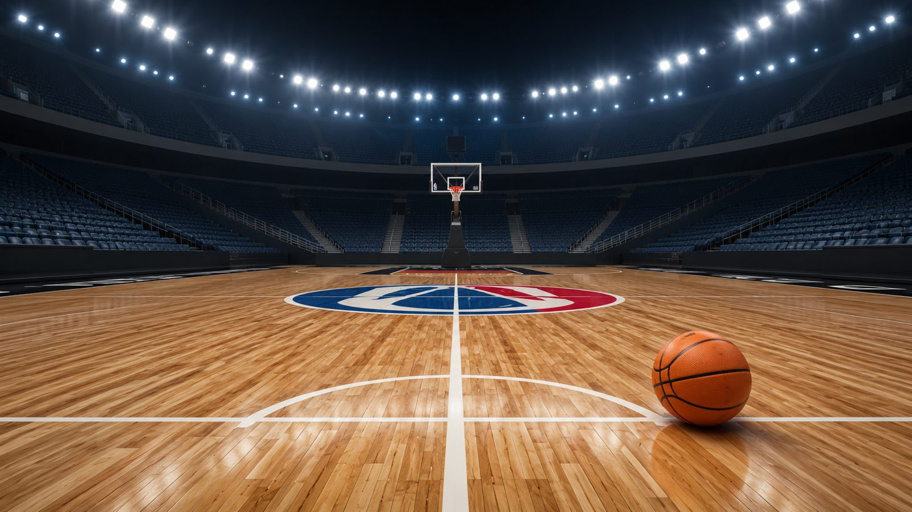

Prüfungsleistung Basketball
Dein Lernpfad durch „Basketball – Das Praxisbuch“ (Kolb 2025): Spielregeln, Techniken, Taktik und Schiedsrichterzeichen – interaktiv, belegt und entlang des Seminarplans aufgebaut.
Dein Wegweiser durch die Theorieprüfung
Klick dich Modul für Modul durch, deck die Antworten auf und teste dich am Ende im Quiz. Jede Info ist mit Kapitel und Seite belegt – zum Nachschlagen im Buch.
Prüfungsstruktur im Überblick
Was erwartet dich?
60 Min. Klausur oder10 Min. mündlich. Schwerpunkte seminarspezifisch → Seminarplan = Themenliste (Regeln, Techniken, Individual-/Gruppen-/Mannschaftstaktik, Spielbeobachtung).
Woraus setzt sich die Praxisnote zusammen?
Technik (40 %) = Mittel aus Wurf-, Dribbling- und Korbleger-Note:
• Wurf:15 Freiwürfe einhändig (Zählung ab 1. Treffer oder nach 2 Fehlwürfen); Note 1,0 ab 13 Treffern, 4,0 bei 4.
• Dribbling:Slalom mit zwei Bällen, mind. 6 gleiche Handwechsel pro Bahn (cross/behind/between), Bahn = Halbfeldlänge.
• Korbleger:1 Min., abwechselnd von links und rechts, Ecke-Freiwurflinie von innen nach außen umdribbeln; 1,0 ab 13 Treffern.
Taktik (60 %) = 5 gegen 5: Angriff in der vorgegebenen Struktur (individual-, gruppen-, mannschaftstaktisch) + Verteidigung in der sinkenden Man-Man-Verteidigung.
Seminarplan → Buchkapitel (deine Lernlandkarte)
| SE | Thema | Buchkapitel (Kolb 2025) |
|---|---|---|
| 01 | Orga + Basketball-Spielregeln | Kap. 2 |
| 02 | Techniken im Angriff: Korbleger, Dribbling, Wurf, Passen · Spiel 1×1+1 | Kap. 4 |
| 04 | Individualtaktik & Technik Verteidigung: Krabben-Technik · Center-Moves | Kap. 3; 4.5; 5.1.4; 5.1.5 |
| 05 | Individualtaktik Freilaufen / cut & facing · Gruppentaktik give & go & fill | Kap. 5.1; 5.2.1 |
| 06 | Gruppentaktik: Blocken und Abrollen (pick & roll) | Kap. 5.2.2 |
| 08 | Theor. Studienleistung: Spielbeobachtung (Abgabe 08.06.2026) | Kap. 2.6 |
| 09 | Sinkende Personen-Verteidigung · Turnier 3×3 | Kap. 5.2.4 |
| 10 | Mannschaftstaktik Angriff: 2-In-3-Out (= 3-Out-2-In) | Kap. 5.3.2 |
| 11+13 | Mannschaftstaktik: sinkende Personen-Verteidigung + Vertiefung | Kap. 5.3.4 |
| 14 | Abnahme 2. prakt. Studienleistung – Mannschaftstaktik (15.07.2026) | – |
| 15 | Praktische Prüfung: Mi, 22.07.2026 | – |
Studienleistungen (nicht vergessen!)
1. Theoretisch:Learnweb-Aufgabe „Spielbeobachtung“ – Abgabe bis 08.06.2026, 23 Uhr · 2. Praktisch:Teil 1 Lehrprobe (basketballspez. Anleitung) + Teil 2 Mannschaftstaktik im 5 gegen 5 (15.07.2026). Alle Teile im selben Semester bestehen; mind. 80 % aktive Anwesenheit.
Spielregeln – eine grobe Zusammenfassung
Zwei Teams à 5 Spieler*innen, Ziel: Ball von oben durch den Ring. Kolb erklärt die Regeln an den Zeitregeln orientiert – genau so lernst du sie hier.
Das Spielfeld – klick die Elemente an!
Das Vorfeld (frontcourt) ist die Hälfte mit dem gegnerischen Korb (Angriff). Das Rückfeld (backcourt) enthält den eigenen, zu verteidigenden Korb. Das Vorfeld des einen Teams ist also das Rückfeld des anderen. Die Mittellinie gehört zum Rückfeld!
Die gedachte Korb-Korb-Linieteilt das Feld längs: Hälfte mit Ball = Ballseite/strong side, ohne Ball = ballferne Seite/weak side/help side. Orientierung außerdem: verlängerte Freiwurflinie. Distanzen: Nahdistanz (an/in der Zone), Mitteldistanz (Zone bis 3-Punkte-Linie), Weitdistanz (hinter der 3-Punkte-Linie).
Die Zeitregeln – von lang nach kurz (Kolbs Erklär-Logik)
Klick jede Zeit an. Merke die absteigende Reihe: 20 – 15 – 10 – 5 – 2 – 1 – 24s – 8s – 5s – 3s.
Was passiert hier?
Spielpause vor Spieleröffnung:Aufwärmen, Besprechung, formale Vorbereitung. Sogar hier können Regelverstöße geahndet werden (z. B. Hängen am Ring).
Was passiert hier?
Halbzeitpause (zwischen 2. und 3. Viertel): Besprechung, Regeneration, 2. Aufwärmphase. Seitenwechselder Körbe – die Bänke bleiben!
Was passiert hier?
Spielviertel – 4 × 10 min effektive (gestoppte!) Spielzeit. Eröffnung des 1. Viertels per Sprungballim Mittelkreis; jedes weitere Viertel per Einwurf an der verlängerten Mittellinie nach wechselndem Ballbesitz (Einwurfpfeil).
Was passiert hier?
Verlängerungbei Gleichstand – so oft, bis ein Team gewinnt. 1 Auszeit pro Team und Verlängerung; alle Fouls bleiben bestehen (Team-Foul-Konto des 4. Viertels läuft weiter).
Was passiert hier?
Viertelpausen (zwischen 1.+2. und 3.+4. Viertel sowie vor jeder Verlängerung): Besprechung, Regeneration, ggf. Wechsel.
Was passiert hier?
Auszeit (Time-out):5 pro Spiel – 2in der 1. Halbzeit, 3in der 2. (davon max. 2 in den letzten 2 Min. des 4. Viertels), 1 pro Verlängerung. Nicht genommene verfallen. Merkhilfe für Coaches: max. 3 Informationseinheitenpro Ansage (Kurzzeitgedächtnis, Rouder et al. 2008).
Was passiert hier?
Wurfzeit (shot clock):Innerhalb 24 s muss der Ball abgeworfen sein und danach den Ring berührenoder durch ihn fallen (nur Brett zählt nicht!). Nach Pfiff: Reset auf 24 s oder 14 s – oder die Zeit läuft weiter. Ablauf → Einwurf-Seite für die Gegner.
Was passiert hier?
Rückfeld-Zeit:In 8 s muss der Ball über die Mittellinie ins Vorfeld (Teil der 24 s). Danach: kein Rückspiel („over and back“) – Mittellinie gehört zum Rückfeld! Ahndung: Einwurf-Seite.
Gleich 3 Situationen!
① Ballhaltenbei enger Verteidigung max. 5 s. ② Einwurf:5 s Zeit ab Ballübergabe. ③ Freiwurf:5 s ab Ballübergabe. Außerdem: Halteball (beide ziehen 5 s am Ball) → Sprungball-Situation → wechselnder Ballbesitz.
Was passiert hier?
Zonen-Regel:Angreifer*innen dürfen sich max. 3 Sekunden in der Zone aufhalten – gilt nichtfür die Verteidigung. Ahndung: Einwurf-Seite.
Schritt- & Dribbelregeln
Im Stand: Standfußbleibt am Boden, Spielfußdarf beliebig oft umgesetzt werden. Beim Abstoppen in der Bewegung wird der erste Fuß mit BodenkontaktStandfuß; bei gleichzeitiger Landung (Einkontaktstopp) freie Wahl. Standfuß darf sich lösen, aber der Ball muss die Hände verlassen, bevorer wieder aufsetzt. In der Bewegung mit gehaltenem Ball: max. zwei Schritte. Verstoß = Schrittfehler/Traveling.
Dribbeln = Ball mit einer Hand werfen, tippen, rollen oder prellen. Verboten: Ball von unten berühren/zur Ruhe kommen lassen = „Schaufeln“ (Carrying). Beim Dribbling sind beliebig viele Schritteerlaubt. Kommt der Ball in beiden Händen zur Ruhe, darf nicht erneut gedribbelt werden = Doppeldribbling → Einwurf-Seite.
Fouls – das Zylinderprinzip
Jede Person hat einen eigenen zylindrischen Raum: begrenzt durch Knie-Fuß-Achse und die Ellenbogen bei angewinkelten Armen, nach oben offen. Wer den eigenen Zylinder verlässt und Kontakt verursacht, foult – auch in der Luft. Legale Verteidigungsposition: beide Füße am Boden, frontal gegenüber (oder senkrecht hochspringend). Auch der Angriff kann foulen (Offensiv-Foul, z. B. Wegschubsen). Ausnahme unter dem Korb: im No-Charge-Halbkreiswird dem Angreifer kein Rempel-Foul in der Luft gepfiffen.
| Foul | Was? | Ahndung |
|---|---|---|
| Persönlich | Kontakt: Blockieren, Halten, Stoßen (Pushing), Rempeln (Charging) | Einwurf; beim Wurf-Foul Freiwürfe nach möglichem Punktwert (2/3, bei Treffer +1 Bonus) |
| Technisch | Fehlverhalten ohne Kontakt (Beleidigung, Respektlosigkeit, am Ring hängen) | 1 Freiwurf, dann weiter an der Unterbrechungsstelle |
| Unsportlich | Übertrieben harter/unnötiger Kontakt, kein Spiel auf den Ball | 2 Freiwürfe + Einwurf im Vorfeld |
| Disqualifizierend | Grob unsportliches Verhalten | Halle verlassen! 2 Freiwürfe + Einwurf im Vorfeld |
• 5 persönliche Fouls → Auswechslung, Rest des Spiels Bank.
• 2 technischeoder 2 unsportlicheoder 1 technisches + 1 unsportliches → ebenfalls raus.
• Mannschaftsfouls:ab dem 5. Teamfoul pro Viertelgibt es für jedes weitere Foul 2 Freiwürfe (außer es war ohnehin ein Foul an der werfenden Person). Reset nach jedem Viertel, nichtin der Verlängerung.
• Punkte:Freiwurf = 1, im 2-Punkte-Bereich = 2, hinter der 3-Punkte-Linie = 3; Treffer trotz Foul → +1 Bonusfreiwurf (max. 4 Punkte möglich).
Freiwurf-Aufstellung (Klick-Animation)
Max. 5 weitere Spieler*innen an der Zone (max. 3 pro Team inkl. Werfer*in an der Zone). Korbnächste + korbfernste Plätze: Verteidigung. Werfer*in verlässt Position erst, wenn der Ball Ring berührt/trifft; kein Antäuschen; letzter Freiwurf muss den Ring berühren (sonst Einwurf-Seite, Stichwort „Airball“).
Minibasketball & Materialien
• Spielzeit 8 × 5 min (U8: 8 × 4) · 4 gegen 4 (U8: 3 gegen 3)
• Korbhöhe 2,60 m · Freiwürfe näher am Korb
• Würfe außerhalb der Zone zählen schon 3 Punkte
• Keine3-, 5-, 8-, 24-Sekunden-Regeln · keine Auszeiten
• Alle Kinder müssen eingesetzt werden · Doppeln & Blöcke untersagt
• Unentschieden möglich; Verlängerung 3 min · keine Ballübergabe bei Einwurf
| Größe | Spielgruppe |
|---|---|
| 5 | bis einschließlich U12 |
| 6 | U14 generell + Frauenbereich |
| 7 | Männerbereich ab U16 |
| 6* | FIBA 3×3 („Unisex-Ball“: Größe 6, Gewicht wie 7) |
Spielbeobachtung & -analyse (Studienleistung SE 08!)
In höheren Ligen sind Scoutsvorgeschrieben; Kriterien seit 2008 im Scouting-Manual (FIBA 2024). Erfasst werden pro Person:
AssistsPässe direkt zum Korberfolg · StealsBallgewinne · TurnoversBallverluste · BlocksWurfblocks · Fouls · Free Throws · Field GoalsWürfe · Rebounds
In unteren Ligen: eigene Statistiken über den Spielberichtsbogen, erweitert durch Wurfskizzen (jeder Wurfversuch am Wurfort eingezeichnet, Treffer/Fehlwurf unterschiedlich markiert, Freiwürfe & Korbleger li/re als Strichliste) und Videoanalysen. Wurfskizzen zeigen z. B., dass fast nur über rechts abgeschlossen wird → Übungsbedarf links.
Spielpositionen
Drei Grundpositionen im Raum: Aufbau, Flügel, Center – daraus entstehen die Grundaufstellungen. Schalte unten zwischen ihnen um!
Grundaufstellungen im Halbfeld
Lesart der Zahlen: von der Mittellinie zum Korb blickend – erst Aufbauhöhe, dann Freiwurflinienhöhe, dann Korbbrettlinie. Alle Kombinationen mit Summe 5 sind denkbar. Die 1-4 erzeugt einen freien Raum unter dem Korb („clear out“) für 1-gegen-1.
Die fünf Spieler*innen-Positionen
(Buch: Shooting Guard)
„Kopf“ der Mannschaft – bester Spielüberblick von der Mitte. Braucht: herausragende Ballkoordination, Dribbel-, Pass- und Fernwurffähigkeiten, schnelle Entscheidungen. Aufgaben: sicherer Ballvortrag, Mitspieler*innen einsetzen, Angriffssicherung, Ansage der Aufstellungen.
kleine*r / große*r Flügel
Verbindung zwischen Aufbau und tiefem Center. Besserer Passwinkel auf den Centerals vom Aufbau, kürzere Pässe in die Bewegung. Müssen selbst per Korbleger und Distanzwurf punkten und sicher in Zone/Post passen. 2 = eher Aufbau-Eigenschaften, 3 = eher Center-Eigenschaften.
Power Forward / Center
Setzen sich unter dem Korb durch (große, sprungstarke Personen). Aufgaben: Rebounds + Nahdistanz-Würfe. Wenig Dribbling; großräumige, kraftvolle Bewegungen mit Körperkontakt (power moves). High Post = an der FWL, Low Post = am Zonenrand auf Korbbrettlinie. 4 hat zusätzlich Flügel-Eigenschaften, 5 spielt rein innen.
Basketball entwickelt sich weg von starrer Positions-Spezialisierung. Gruppierung stattdessen: Außenspieler*innen (hinter der 3-Punkte-Linie; Aufbau-/Flügeleigenschaften) und Innenspieler*innen (an der Zone / im 2-Punkte-Bereich; Centereigenschaften). „3 out – 2 in“ entspricht der 1-2-2 mit Centern auf der Low-Post-Position; je nach Kader auch „2 out – 3 in“ oder „4 out – 1 in“.
Techniken
„Techniken sind alle Bewegungsformen des Körpers, die den Ball kontrolliert bewegen, den Ballerhalt vorbereiten und zur Abwehr des Balles umgesetzt werden“ (Kolb 2025, Kap. 4). Grundlage von allem: die Ballkoordinationund die ready-position.
Grundstellung: ready-position
So geht's:Aus maximal schulterbreitem Stand die Hüfte nach hinten-untenabsenken – „auf einen imaginären Sessel setzen“. Knie bleiben hinter den Fußspitzen, zeigen leicht nach außen (Gelenkschonung!). Oberkörper aufrecht. Stabilisiert durch Oberschenkel-, Gesäß- und Rückenmuskulatur.
Warum?Muskuläre Vorspannung → sofort handlungsfähig: passen, werfen, dribbeln, verteidigen. Mit Ball = zugleich Wurfauslage („shot-pass-dribble-position“).
Übung: „In den Sessel setzen“ an der Wand · Spielform „Wadenklatschen“ · Ritual „Are you ready?“ – „Ready!“
Abstoppen:flach, Beine gebeugt, tiefer Körperschwerpunkt. Einkontaktstopp (beide Füße gleichzeitig → freie Standbeinwahl!) oder Zweikontaktstopp (nacheinander → erster Fuß = Standfuß). Schritt- oder Parallelstellung.
Sternschritt (Pivot):Standfuß bleibt am Boden (Drehen auf dem Ballen erlaubt), Spielfuß beliebig oft in alle Richtungen umsetzen. Standbein darf innerhalb der Ballbesitzphase nicht gewechseltwerden. Vor dem Abheben des Standfußes muss der Ball die Hand verlassen (Dribbling, Pass oder Wurf) – sonst Schrittfehler.
Dribbeltechniken
Grundprinzip:kontinuierliches Wegdrücken und „Ansaugen“ des Balles mit einer Hand. Handgelenk klappt impulsiv ab, Finger umschließen den Ball krallend, der Handteller berührt den Ball nicht. Impuls immer oberhalb des Balläquators (sonst Schaufeln!). Im Stehen: Impuls von oben, neben dem Körper. Im Lauf: von hinten-oben, seitlich vor dem Körper. Ballferner Arm schützt, ballferne Schulter zum Gegner = „Schutzschild“.
Durchführungsregel: „Dribbele mit der rechten Hand nach rechts und mit der linken Hand nach links!“ – immer mit der gegner*in-fernen Hand.
Zwei Grundformen: Passgangdribbling (gleichseitiger Fuß zur Dribbelhand macht den Schritt) und Kreuzgangdribbling (gegenseitiger Fuß, „crossover“). Je langsamer die Bewegung, desto niedriger und sicherer das Dribbling; im Sprint höher und richtungsgebundener.
Die 3 Handwechsel – Animation ansehen (prüfungsrelevant: genau diese 3 sind Teil der Dribbling-Technikprüfung!)
vor dem Körper
Seitlicher Impuls leicht von hinten; KSP kurz nach unten-hinten. Ideal bei Abstandzur Verteidigung.
hinter dem Rücken
Einrollende Handbewegung, Ball bekommt Drall (Spin). Ideal bei Körperkontakt.
durch die Beine
Kräftiger Impuls leicht von oben auf die Fuß-Fuß-Linie; weiter im Kreuzgang. Auch bei Kontakterfolgreich.
Wurftechniken
Einteilung nach der Bewegung vor dem Wurf: Korbleger (aus dem Lauf) vs. Positionswürfe (aus dem Stand) – plus Dunking. Je näher am Korb, desto mehr hilft das Brett; je weiter weg, desto wichtiger die Flugkurve (Arc).
Dunking-Formel: Ringhöhe 3,05 m + Balldurchmesser 0,23 m − Reichhöhe (z. B. 2,20 m) = erforderliche Sprunghöhe (1,08 m).
Positionswurf: Standwurf → Sprungwurf (Technikknoten)
Wurfauslage (Rechtshänder):ready-position, leichte Schrittstellung, rechter Fuß vorn – Fußspitze unter dem Ellenbogen des Wurfarms. Ellenbogen + Oberkörper zum Korb. Der Wurfarm bildet drei rechte Winkel: Oberarm/Oberkörper, Ellenbogen, Handrücken/Unterarm. Ball liegt auf der Wurfhand, Stützhand sichert seitlich.
Ablauf:Streckung beginnt in den Beinen → setzt sich über Arm und Hand fort → schnappartiges Abklappen des HandgelenksRichtung Korb (Bild: Schlange, die sich hochschlängelt und zubeißt). Ende: Körper gestreckt, Handgelenk abgeklappt, Fingerspitzen entspannt Richtung Boden.
Sprungwurf:gleiche Wurftechnik + Absprung; Abwurf am höchsten Punkt der Flugphase; Landung beidbeinig in der ready-position, möglichst am Absprungort.
Vermittlung:Ganzheits-Lernmethode – Bewusstmachen (Demo/Video) → Werfen im Stehen (Zeitlupe, sich selbst hochwerfen, „Swift“-Netztreffer vom No-Charge-Halbkreis aus, Schritt für Schritt weiter weg) → Werfen mit vorgeschalteten Bewegungen („Wurfmaschine“, „Sternenlauf“).
Typische Fehler:Stützhand hinterm Ball statt seitlich · Beinstreckung zu kurz/langsam · Streckung nicht fließend · Wurfhand wird weggezogen · Streckung nach vorn statt senkrecht (Ball prallt flach ab).
Wurfspiele: „Auswerfen/Bump“, „Spiel 21“, „Wanderhut“ – und das Zonen-Wurfspiel für alle Könnensstufen.
Korbleger – Schritt für Schritt (Klick-Animation)
Wurfabschluss aus dem Lauf mit einbeinigem Absprung. Anlauf mit gehaltenem Ball: max. 2 Schritte (Schrittregeln). Merkrhythmus von rechts: „0 – 1 – 2“ = links (letztes Dribbling) – rechts – links (Absprung).
Die 6 Knotenpunkte (von rechts): ① letztes Dribbling = Kreuzgangdribbling rechts (linker Fuß setzt auf) → ② beidhändige Ballaufnahme, Ball sichern → ③ Laufschritt rechts → ④ Stemmschritt links → ⑤ Absprung links, rechtes Bein schwingt; Ziel: kleine rechte Brettecke; Wurf mit der rechten (gegnerfernen) Hand → ⑥ beidbeinige Landung.
Abschluss-Varianten: Druckkorbleger (Armarbeit wie Positionswurf, Fingerspitzen zum Kopf, hoher frontaler Abwurf) · Unterhandkorbleger (Hand als „Schaufel/Teller“, Fingerspitzen zum Korb, verlängert den Abwurf) · Dunking. Von links: alles spiegelverkehrt (Absprung rechts, Wurf links).
Prüfungskriterien Korbleger (Praxis): Ball fällt von oben in den Ring · Wurfhand diagonal zum Absprungbein · Abwurf im Sprung · Zwei-Kontakt: von rechts Absprung mit links, von links mit rechts.
Vermittlung per Teil-Lernmethode (4 Teile: einbeiniger Sprungwurf → Anlauf → letztes Dribbling → Andribbeln). Fehlerbilder: falscher Absprungfuß (→ Rhythmus „0-1-2“), falsche Wurfhand (→ beidhändig, starke Hand auf den Rücken), zu wenig Sprunghöhe (→ Steigesprünge), Absprung zu nah am Korb (→ Blick zum Ziel statt auf den Ball).
Passtechniken – Tabelle & Fangtechnik
Der Pass ist die schnellste Form der Raumüberwindung – nur mit den Händen! Beide sind verantwortlich: Passgeber*in undPassempfänger*in.
| Passtechnik | Merkmal | Einsatzbeispiel |
|---|---|---|
| Druckpass / Brustkorbpass (chest pass) | Grundtechnik; direkt & schnell | Einwurf |
| Bodenpass (bounce pass) | indirekt, langsamer; prellt im letzten Dritteldes Weges auf | gegen größere Personen |
| Überkopfpass (overhead pass) | hart, hoher Abpasspunkt | gegen kleinere Personen |
| Einhändiger Pass seitlich | seitlicher Abpassraum wird ausgeschöpft | Center „steckt durch“ |
| Kurzer zweihändiger Pass | kaum Armstreckung | Handoff |
| Schleuderpass (baseball pass) | sehr lang, einhändig aus dem Anlauf | Schnellangriff |
| Lobpass | sehr hoher, bogenförmiger Pass | Backdoor – in den Rücken der Verteidigung |
Chest-Pass in 3 Phasen: ① ready-position, Hände seitlich am Ball, Daumen+Zeigefinger bilden Dreieck, Ball vor der Brust, Ellenbogen nach außen → ② impulsiver Schritt vorwärts + beide Arme strecken parallel zum Boden, Hände schnappen nach außen ab („Maulwurf-Schaufelhand“) → ③ Ausfallschritt, Arme gestreckt, beobachten, zurück in die ready-position.
Fangen:Blick zur passenden Person, gestreckte Arme + geöffnete Hände als Zielsignal → Ballgeschwindigkeit amortisieren (Arme geben nach, Rückwärtsschritt in die ready-position, Ball „ansaugen“).
Pass in den Lauf:nicht auf die Person, sondern vor siepassen (Bewegungsrichtung + Tempo antizipieren). Je höher/länger der Pass fliegt, desto mehr Zeit hat die Verteidigung!
Vermittlung: Gassenaufstellung → mit Ortswechsel → gegen passive Verteidigung (Tigerball) → Fangen im Sprung/Rebound → Passen im Laufen (Streifenpassen, 0-Schritt-Regel!) → gegen Verteidigung → Shell-Drill. Spielreihe Stratemeyer: Vom Linienbasketball zum Minibasketball (Tigerball → Parteiball → Linienball → Mattenball → Kastenball → Turmball → Minibasketball) – Passen als „Mittel der Raumüberwindung“, Dribbling zunächst raus.
Verteidigung: Krabbentechnik (SE 04!)
„Erst mit der Verteidigung wird Basketball zu einem Spiel.“ Die eine grundlegende Verteidigungs-Fortbewegung – auch slides / Gleitschritttechnik / Krabbenlauf, im Handbuch Basketball (2012) „GrAN-Technik“ (Greifen–Abdrücken–Nachsetzen; laut Kolb umständlich, da der Abdruck zuerstkommen muss).
Technikbild:kräftige, flache lange Schritte seitlich-rückwärtsin tiefer ready-position. Füße bleiben weit auseinander, hüftbreit, kein Überkreuzen. Der hintere (gegnernähere) Fuß drückt ab, der vordere „greift“ stützend. Arme wie Krabbenzangen in der Luft: ein Arm auf Dribbelhöhe, der andere sichert den Passraum. Regelhinweis: Arme seitlich nur angewinkelt, nach oben gestreckt erlaubt (DBB 2022, S. 38 ff.).
Vermittlungsweg (7 Stufen): ① ready-position → ② „Quivern“ (Füße wie Nähmaschinennadel) → ③ „Beweg dich wie eine Krabbe übers Feld“ → ④ Schatten-Dribbling im Zick-Zack / Korridorübung mit Sternschritt-Richtungswechsel → ⑤ 1-gegen-1 im Korridor → ⑥ + Passgeber auf Aufbauposition (alle Grundtechniken kombiniert) → ⑦ Übergang in die Taktik. Fehler: KSP zu hoch (→ Wandsitz, Hahnenkampf), hinteres Bein nachgezogen statt Abdruck (→ Krabbenschritte über Hütchenreihe).
Taktiken: Individual → Gruppe → Mannschaft
Kolbs Logik: Individualtaktik (1 gegen 1) ist die Voraussetzung für Gruppentaktik (2–4 Personen), und jede Gruppentaktik wird zur Mannschaftstaktik (5 gegen 5) komplettiert.
Individualtaktik – die 5 Leitfragen (Kap. 5.1)
Genau so strukturiert das Buch die Individualtaktik. Deck jede Frage auf!
Außen:Freilaufen („in-out“) – mit Tempo in die Zone rein und explosiv wieder raus hinter die 3-Punkte-Linie; Laufwege: I-Cut, V-Cut, L-Cut, Banana-Cut (s. Animation unten). Backdoor/Frontdoor-Schnitte. Signal: gespreizte Hand zeigt den Anspielpunkt. Innen (Center): Aufposten – Rücken zum Korb am Zonenrand, ready-position (3-s-Regel!). Außerdem: Offensiv-Rebound.
Situationslogik: Verteidigung zwischen Ball und mir → Lobpass zum Korb · Verteidigung bleibt in der Zone → außen frei · Verteidigung bleibt an der 3er-Linie → in der Zone frei.
Im Stand:Sternschritt – Ellenbogen seitlich, Ball nah am Oberkörper; reagiert die Verteidigung, folgt der nächste impulsive Sternschritt. In der Bewegung:möglichst tiefes, kraftvolles Dribbling – kurze Ballflugzeit = mehr Kontrolle, kleinere Zeitfenster für Steals.
Bei Ballerhalt zuerst: Facing = frontal zum Korb ausrichten (per Sternschritt oder Hineinspringen) in die shot-pass-dribble-Position (spd). Peripher Mit-/Gegenspieler sehen, Gegenüber „lesen“ (Abstand, Fußstellung, Athletik, Länge).
• Verteidigung weit weg (> Armlänge) → Wurf. · Ganz eng → am vorderen Fuß vorbei zum Korb dribbeln, Korbleger (erfolgreichster Abschluss!). · Mittlerer Abstand → Täuschungen (Dribbel-/Wurftäuschung → Penetration). · Verteidigung aufrecht/langsam → Antrittsdribbling. · Verteidigung größer → Mittel-/Weitdistanz statt Korbnähe. · Gestoppt? → Sternschritt Richtung Korb, ggf. „Sternschritt auflösen“. · Mitspieler frei unter dem Korb → Assist. · Auf der Post-Position → Power Moveper Sternschritt rückwärts.
Gegner mit Ball:zwischen Angreifer*in und Korb bleiben (face to face), ready-position. Eine Dribbelrichtung anbieten (meist zur Außenlinie!): vorderer Fuß mittig vor den Füßen des Gegenübers, hinterer Fuß öffnet diagonal den Weg. Gleichseitiger Arm stört auf Ballhöhe, der andere sichert den Passraum. Blick: peripher auf die Bauchregion. Beim Dribbling: Krabbentechnik, immer eine Schrittlänge voraus, Richtung „delegieren“. Je näher am Korb, desto enger/körperbetonter. Ziel: Ballaufnahme spätestens an der Zone erzwingen – danach nur noch Pass/Wurf verteidigen: eng ran, aufrichten, Arme hoch + seitlich.
Gegner ohne Ball:zwischen Gegner*in und Korb; Ball UND Gegner*in ständig zeitgleich wahrnehmen (peripher/taktil). Varianten: half-deny (Rücken zur Korb-Korb-Linie) und full-deny/fronting (zwischen Ball und Gegner*in, Unterarm am Bauch des Gegenübers).
① Ball wird offen gehalten → mit beiden Händen greifenund ziehen. ② Offenes Dribbling → Ball wegtippen (Steal), dabei stabil bleiben – kein Gewicht nach vorn! ③ Passweg antizipierenund kreuzen (Interception – riskant: bei Misserfolg bin ich ausgeschaltet). ④ Nach jedem Wurf: Rebound – als Verteidigung per Ausboxen (box out): bei Wurfantizipation rücklings in den Gegner drehen, aussperren, Ballflug einschätzen, zum Ball (Sprung), fangen.
I:gerade rein, gleicher Weg raus · V:rein und versetzt raus · Banana:erst gebogen, dann geradlinig · L: „Haken schlagen“. Entscheidend: weit genug reinlaufen + Tempowechsel!
Gruppentaktik (Kap. 5.2) · SE 05, 06, 09
Give & Go & Fill – Passen, Schneiden, Auffüllen (Animation)
Ablauf: ① give – Aufbau passt auf den Flügel (der sich per In-Out freiläuft; Ball und Person kommen idealerweise zeitgleich an) → ② go – Passgeber*in schneidet (bananenförmig über die Ballseite) zum Korb und bietet sich für den Rückpass an → ③ fill – von der ballfernen Seite rückt eine Person auf die frei gewordene (Aufbau-)Position auf; die cuttende Person füllt ohne Rückpass die freie Außenposition.
Warum fill?Kurze Passwege · ständig besetzte Aufbauposition = Angriffssicherung (safety) · Balance (gleichmäßige Raumverteilung li/re) · Spread (auseinanderziehen) · Space (Freiraum im 2-Punkte-Bereich – nur so gibt es einen Weg zum Korb). Grundprinzip: Mit der Ballabgabe gebe ich die Verantwortung nichtab – ich mache mich sofort wieder anspielbar.
Vermittlung – Überzahlspielreihe:2-0 (rechts, dann links) → 2-1 → 2-2 („Schließe aus dem give&go ab!“) → 3-0 (give&go&fill als Kontinuum) → 3-1 → 3-2 (ohne Doppeln, nur aus give&go punkten) → 3-3 (Bonusregel: Korbleger-Korb = 3 Punkte).
Pick & Roll – Blocken und Abrollen (Animation) · SE 06
Block stellen (pick/screen):stabil – weite Standfläche, gebeugte Knie, Arme vor dem Körper gekreuzt – frontal an die Verteidigungdes Mitspielers, Rücken in den freizublockenden Weg. Dann stehen bleiben (Regeln: bewegter Block = Foul!). Block nutzen:warten bis der Block steht, dann mit schnellem Schritt schulterdichtvorbeidribbeln (Kreuzgangdribbling), Verteidigung im Block „hängen lassen“. Abrollen (roll):sobald der Mitspieler vorbei ist – Sternschritt rückwärts, Rücken zur geblockten Person, in den freien Raum anbieten.
Blockvarianten: direkter Block (ball screen)für die Person MIT Ball · indirekter Block (off-ball screen)ohne Ball · Doppelblock · Wurfschirmblockt für den direkten Wurf frei · Abstreifenan stehender Person · pick & popstatt Abrollen in den freien Raum entfernt vom Korb.
Vermittlung nach TGU („Teaching Games for Understanding", Mitchell et al. 2006, induktiv): ① Spielform 3-3 mit Aufgabe „Bekomme die ballbesitzende Person für einen Korbleger frei!“ → ② Gespräch (Was/Wie-Fragen) → ③ Fertigkeitsübung 2-1 mit „Personaltrainer*innen“ am Spielfeldrand → ④ Spielform zur Festigung (Block-Korb = 3 Pkt.). Modi: „make it give it“ (nach Korb Ball abgeben) vs. „make it take it“.
Block nur sinnvoll, wenn die ballbesitzende Person noch nicht gedribbelthat! Und: Der Block ist im Buch das Paradebeispiel für soziale Kompetenz/„Helfen“im Spiel.
Verteidigung in Blocksituationen (Kap. 5.2.3)
Immer zuerst: Block ansagen („Block links/rechts!“). Fünf Möglichkeiten:
| Taktik | Wer bleibt wo? | Bewertung |
|---|---|---|
| Switchen (Wechseln) | Verteidiger tauschen die Gegenspieler | Einfach (wenig Überblick nötig), aber: Gefahr von Miss-Match (groß gg. klein …) & Überzahl am Korb – bei der Einführung vermeiden! |
| Über den Block gehen (running over) | Jede*r bleibt am eigenen Gegner; Schritt zum Gegenspieler, sobald der Block steht, und über den Block mitgehen | Anfängertauglich, aggressiv |
| Absinken (under) | Am eigenen Gegner bleiben, auf der gegnerfernen Seite des Blocks vorbeidrehen Richtung Korb | Anfängertauglich, sicherer Weg zum Korb |
| Durchgleiten (going through) | Mitspieler macht Platz (Schritt zum Korb), geblockte Person läuft durch die Lücke | Weiterführend, braucht Kommunikation |
| Help & Recover | kurz aushelfen (switchen) und zurückwechseln | Rettungsanker nach Miss-Match |
Sinkende Personen-Verteidigung (SPV) in der Gruppe (Animation) · SE 09
Basis:enge „man-to-man defense“ (PV) – jede*r setzt die Individualtaktik um. Sinkend (SPV): + räumliches „Lösen“ vom direkten Gegenspieler (Floating). Absinken = weg vom Gegenspieler, Richtung Korb UND Ball → aus der help-positionkann rechtzeitig geholfen werden; danach: „help the helper“.
Beobachte: Wer am Balloder 1. Passwegist, verteidigt eng. Wer 2+ Passwege entfernt ist (ballferne Seite), sinkt abRichtung Zone/Ball.
Orientierungshilfen:Korb-Korb-Linie teilt in Ballseite (strong side) und ballferne Seite (weak side) · Anzahl der Passwege (Pass zur direkt benachbarten Position = 1 Passweg) entscheidet: Ball + 1. Passweg = eng, ab 2. Passweg = absinken. In der help-position: ready-position, Arme seitlich oben, ein Fuß zeigt zum Ball, einer zum Gegenspieler, Fortbewegung per Krabbentechnik, peripherer Blick auf Ball UND Gegner*in gleichzeitig.
Spielreihe (4 Stufen): ① Angriff steht & passt nur – Verteidigung positioniert sich (Pässe durchlassen!) → ② Passen + Laufen (ohne Abschluss; jetzt Pässe abfangen) → ③ + Dribbling (helfen/übernehmen; kein Doppeln!) → ④ alles erlaubt: 5 Angriffe in Folge, Punkte für Korb (Angriff) bzw. Ballgewinn (Verteidigung); dann „make it take it“.
Mannschaftstaktik (Kap. 5.3) · SE 10–13
Schnellangriff / Fast Break (Kap. 5.3.1) – Laufspuren-Animation
Schnellste Taktik zum einfachen Abschluss (Korbleger/Dunking). Ideal nach Steal/Interceptionoder gegnerischem Korberfolg. Transition game = Umschalten (transition offense/defense). Der nummerierte Schnellangriffordnet das Feld in Spuren:
Rollen:5 (Center) wirft schnell ein → 2 & 3 (Flügel) sprinten auf den Außenspuren, ab Mittellinie bereit für den langen Pass → 1 (Aufbau) läuft sich grundliniennah frei, passt auf einen Flügel, bleibt außen → 4 läuft als 1. Trailerauf einer Zwischenspur zur FWL und cuttet über die Ballseite zum Korb → 5 folgt als 2. Trailerauf der Mittelspur in die entstandene Lücke. Kein Abschluss? → Positionsangriff.
Vermittlung: Achterlauf/Criss-Cross (3-0 → 4-0 → 5-0; „dem eigenen Pass hinterherlaufen“), lange Pässe „coast to coast“ (Schleuderpass!), Achterlauf mit anschließendem 2-1 (Transition), 5 Schnellangriffe im Pendel (Abschluss durch 1 → 2 → 3 → Trailer 4 → Trailer 5).
Angriff nach Prinzipien: 3-Out-2-In (Kap. 5.3.2) · SE 10
Prinzipien statt Schablonen:Prinzipien definieren den Handlungsrahmen, die Entscheidung trifft das Team situativ selbst („bewege dich, sobald du gepasst hast“). Vorteile: kreative Entfaltung, für die Verteidigung schwer kalkulierbar, fördert taktische Entwicklung. Gegenmodell: „Schablonen“-Angriff (z. B. 1:3:1, „play“) mit festen Laufwegen – nimmt Verantwortung ab, gut für junge Teams.
Die 5 Prinzipien des 3-Out-2-In:
① give & go & fill – wer passt, bewegt sich; alle füllen zum Ball hin auf.
② Spacing – möglichst weite Distanz zueinander.
③ Innenspieler*innen bleiben an/in der Zone:ballseitig tief aufgepostet, ballfern hochan der Zonenseite.
④ Außenspieler*innenkehren nach jeder Aktion sofort hinter die 3-Punkte-Linie zurück (freie Position).
⑤ Bei Penetration eines Außenspielers weichen die Innen raumgebend aus – bleiben anspielbar/reboundbereit.
Personal: 2 durchsetzungsstarke Innen (kurze Pässe, Korbnähe) + 3 Außen (Penetration, sichere Pässe). Sehr stark gegen Personenverteidigung; viele 1-gegen-1-Situationen in Korbnähe; 2 Personen sichern den Offensiv-Rebound. Schwäche: wenn die Verteidigung zu doppeln beginnt.
Sinkende Personen-Verteidigung im 5-5 (Kap. 5.3.4) · SE 11 + 13
Mannschaftstaktisch gelten dieselben Absprachen wie in der Gruppe – plus detaillierte Vorgaben („Set defense“) gegen den 3-Out-2-In-Angriff:
• Kurze Pässe und Dribblings in die Mitte (Zone) verhindern
• Lenken: oberhalbder verlängerten FWL → Weg zur Seitenlinieöffnen; unterhalb → Weg zur Grundlinieöffnen
• Dribbelweg in die Ecke (corner)öffnen
• Blöcke werden über den Block gehendverteidigt, ggf. help & recover
• Es wird nicht gedoppelt!
• Low-Post-Verteidigung abhängig von der Ballposition:
– Ball oberhalbder verl. FWL → half-deny
– Ball zwischen FWL und Grundlinie → full-deny
• Hilfe kommt immer von der ballfernen Seite
• Kein recover möglich → „help!“ rufen → Rotation: zu den frei werdenden Angreifern „auffüllen“, ggf. „help the helper“
Bonus: Raumverteidigung / zone defense (Kap. 5.3.5) – zur Abgrenzung
Erst lernen, wenn die SPV beherrscht wird. Feld in 5 Teilräume, in jedem wird Personenverteidigung gespielt; an den Grenzen wird übergeben/übernommen (verbale Kommunikation!). Ziel: Korberfolge aus der Nahdistanz verhindern. Beispiel 2:1:2 – stark gegen Teams mit schwachem Fernwurf, Korbleger fast unmöglich. Schwachstellen:Nahtstellen der Teilräume (bei 2:1:2: seitlich-mittig an der Zone + mittig an der FWL), langsamer als Swing-Pässe. Kombiformen: z. B. „Diamond and one“. Wichtig:Im Jugendbereich (JBBL/NBBL/WNBL) ist ausschließlich Personenverteidigung vorgeschrieben (DBB 2019)! Presse-Varianten: Ganzfeld-, Halbfeldpresse, Positionsverteidigung.
Schiedsrichter-Handzeichen
„Jedes Foul wird entsprechend seiner Zuordnung von der/dem Schiedsrichter*in per Handzeichen angezeigt“ (Kolb 2025, Kap. 2.3, S. 19). Die Fotos zeigen die offiziellen FIBA/DBB-Zeichen – zum Nachschlagen: DBB-Regelwerk Anhang A. Bei „3 Sekunden“ steht bewusst das Schema statt eines Fotos: Das Zeichen wird mit drei Fingern seitlich auf Brusthöhe gegeben, nicht mit senkrecht erhobenem Arm – sonst wäre es vom 3-Punkte-Versuch nicht zu unterscheiden.
Mündliche Prüfung
Multiple Choice trainiert Wiedererkennen. Die mündliche Prüfung verlangt freies Abrufen – zwei verschiedene Gedächtnisleistungen. Hier übst du die richtige: offene Frage, laut antworten, dann abgleichen.
Dein Stand
Durchgang starten
Einzelner Themenblock – oder die Simulation quer durch den Stoff, so wie geprüft wird:
Themenblock wählen oder direkt die Simulation starten.
Quiz & Lernkarten
Erst die Zahlen-Karten drillen, dann das Quiz. Falsche Antworten sind Gold wert – die Themen nochmal im jeweiligen Modul nachlesen. Achtung:Multiple Choice prüft nur Wiedererkennen. Deine Theorieprüfung ist mündlich – dafür ist der da.
Zahlen-Drill (Karten umdrehen)
Wissensüberprüfung
Zwei Modi: kurzer Stichproben-Test oder die komplette Pruefung ueber alle Module – sortiert nach Themenbloecken, mit Auswertung pro Bereich und Note nach Klausurlogik.